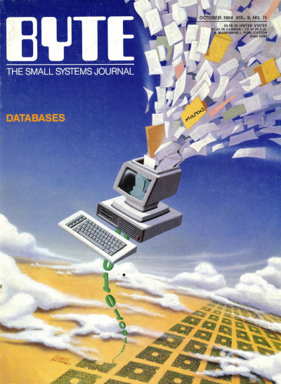

Working with SQLite in Python without an ORM or migration framework

(seriously though, BYTE covers are the best)
I learned about SQLite’s user_version pragma some time ago from a comment on
Hacker News (as one does). Not sure which comment it was specifically, but it
went something like this:
One thing you can look into using is the SQLite user_version pragma. We use this right now to roll our own migrators and it’s light years better than how migrators work for Entity Framework, et. al.
I’d wanted to try working without an ORM for a while, and this comment gave me the final missing piece: a straightforward approach to SQL migrations that I can trivially implement. Obviously, I had to try it out on my latest pet project. Here I’ll outline some of my findings.
APSW as the driver#
Using apsw instead of the standard library’s sqlite3 package has a couple of advantages:
It’s easy to link against the latest sqlite3 version#
I originally ran pytaku on a cheap Vietnamese VPS provider, which only offered Ubuntu 12.04. This came with a relatively old sqlite3 version that lacked UPSERT support (probably among other things that I forgot). I guess it’s possible to compile a custom python version that links to a newer sqlite, but that would defeat the purpose of pytaku being an easy-to-deploy program. Apsw, on the other hand, provides a pip one-liner that compiles and links to the latest sqlite. (still kinda bad, but it’s less bad than compiling custom python)
It has the same defaults as upstream sqlite#
Python stdlib’s sqlite3 has a few default configurations that deviate from
sqlite’s. A couple of things that actually bit me are:
- autocommit mode is off by default
-
executescript()automatically issues aCOMMITstatement
To be fair, both of them are written in the docs, and these custom defaults are probably to maintain consistency with PEP 249. Still, as I was learning sqlite, it’s frustrating to jump between sqlite docs and python docs to interpret the correct behavior at times. Apsw does none of those things: it’s simply an unopinionated, honest-to-god python binding to sqlite.
To be completely honest though, in the long run it seems more reasonable to learn the pysqlite3 API so that I can avoid an extra dependency. I’m also now using Debian 11 which has a reasonably recent sqlite, so the compilation advantange is no longer that great.
A minimum viable DB migration scheme#
With <100 lines of python, I ended up with a migrator that:
-
Finds migration files in the form of
./migrations/mXXXX.sql -
Uses
user_versionpragma to figure out what migrations are pending - Is forward-only—I did say that this is minimally viable didn’t I ;)
Coming from Django, I missed a definitive place to see the latest definition of
the whole db (which, in Django, is the models file). That’s why I set up the
migrator to always write the latest db definition out to a file using
sqlite3 <db_file> .schema > latest_schema.sql, and keep that file in
version control:
-- This file is auto-generated by the migration script
-- for reference purposes only. DO NOT EDIT.
CREATE TABLE title (
id text,
name text,
site text,
cover_ext text,
chapters text,
alt_names text,
descriptions text,
updated_at text default (datetime('now')), is_webtoon boolean not null default false, descriptions_format text not null default 'text',
unique(id, site)
);
CREATE TABLE user (
id integer primary key,
username text unique,
password text,
created_at text default (datetime('now'))
);
[...]
Now to address the elephant in the room: SQLite has… limited ALTER TABLE
capabilities. The upside is it’s well-documented. What this means in
practice is that sometimes an otherwise simple ALTER TABLE in other RDBMS-es
will require more manual gymnastics in SQLite: you’ll need to create a new
table with the desired properties, copy existing data over to the new table,
then drop the old table. There are subtle bear traps in the specific order of
steps to take, but thankfully the docs, again, deliver: as long as you
follow the 12 steps correctly, you won’t mess up your data. It sounds
intimidating but it’s not that bad. Here’s a specific example from pytaku
where I removed a FOREIGN KEY constraint:
-- Remove foreign key from "read" table pointing to "chapter".
-- So we can, say, mark all chapters of a title as read even if some of those
-- chapters haven't been created.
pragma foreign_keys = off; -- to let us do anything at all
begin transaction;
create table new_read (
user_id integer not null,
site text not null,
title_id text, -- nullable to accomodate existing mangadex rows, urgh.
chapter_id text not null,
updated_at text default (datetime('now')),
foreign key (user_id) references user (id),
unique(user_id, site, title_id, chapter_id)
);
insert into new_read select * from read;
drop table read;
alter table new_read rename to read;
pragma foreign_key_check;
commit;
pragma foreign_keys = on;
Besides the boilerplaty dance with foreign_key pragmas and transactions, all I
had to do was copy the existing table definition from the aforementioned
latest_schema.sql file, tweak it to my desired state, then do the table
switcheroo. Again, the specific ordering of steps is important. I won’t go into
details, but I had actually tripped on a failure mode, which I then realized
was already nicely warned against in the docs. RTFM is actually fine advice for
projects that have good documentation, who would have thought?
Recommended sane defaults#
SQLite comes with some default settings that may be surprising for people coming from e.g. Postgres. Here are some tweaks that worked better for me.
Enable WAL mode. This allows for concurrent readers, which is usually what you want from a web service.
Enforce foreign key constraints. Yep, you read that right: SQLite doesn’t enforce foreign key constraints by default. This is just one of the various consequences of SQLite being veeeeery lax about what you store. Another potential surprise is column types not being enforced, whose alternative only landed recently in the form of STRICT Tables.
Set a non-zero busytimeout. Otherwise if a query is blocked, it will crash immediately instead of waiting for the blocking query to finish, no matter how short the wait is.
A quick note on SQL injection#
(or how to move on from the late 90s)
You don’t need a full blown ORM to protect yourself against SQL injections. In fact, SQLite (and any sane RDBMS really) has built-in support for it called parameterized queries. Python’s sqlite3 documentation also covers this, but the tl;dr is:
# Never compose your query with string interpolation like this:
cursor.execute(f"SELECT foo FROM bar WHERE stuff = '{user_input}';")
# Use the parameter substitution API instead:
cursor.execute('SELECT foo FROM bar WHERE stuff = ?;', (user_input,))
Congratulations! You now have better security hygiene than Vietnam’s “leading” cybersecurity firm.